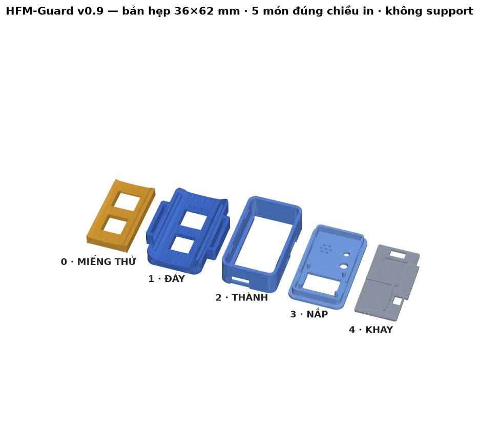

Người canh gác thầm lặng cho trẻ mắc tay chân miệng
HFM-Guard là thiết bị đeo ở bắp tay, theo dõi liên tục thân nhiệt, nhịp tim và cử động của trẻ. Khi ba dấu hiệu chuyển nặng xuất hiện cùng lúc, thiết bị hú còi, chớp đèn và báo về điện thoại của phụ huynh — kể cả lúc nửa đêm.
Vì sao cần thiết bị này
Điều nguy hiểm của tay chân miệng không nằm ở nốt ban hay cơn sốt nhẹ ban đầu, mà ở tốc độ trở nặng. Ba dấu hiệu báo trước rất khó thấy bằng mắt thường, nhất là khi trẻ đang ngủ.
Sốt cao khó hạ
Thân nhiệt từ 39 °C kéo dài, không đáp ứng thuốc hạ sốt.
Mạch nhanh
Nhịp tim trên 150 lần/phút trong lúc trẻ đang nằm yên.
Giật mình chới với
Những cơn rung giật ngắn, lặp lại khi trẻ ít vận động hoặc đang ngủ.
Thiết bị hoạt động thế nào
Ba cảm biến đo liên tục; vi điều khiển so chéo ba luồng số liệu để phân biệt trẻ đang chơi với trẻ đang co giật, rồi mới báo động.
Sản phẩm
Bản dự thi dùng các mô-đun có sẵn lắp trong hộp in 3D tự thiết kế. Song song, nhóm đã thiết kế xong mạch in thu nhỏ cho bước tiếp theo.

| Thông số | Bản dự thi (v0.9) |
|---|---|
| Kích thước | 36 × 62 × 24 mm |
| Vi điều khiển | ESP32-S3 (Bluetooth LE + WiFi) |
| Nhịp tim | MAX30102 (quang học) |
| Nhiệt độ | MAX30205 (±0,1 °C) |
| Cử động | ADXL362 (3 trục) |
| Hiển thị · cảnh báo | OLED 0,96" · còi · đèn |
| Pin | LiPo 300 mAh, sạc USB-C |
| Hướng phát triển | Mạch in thu nhỏ |
|---|---|
| Kích thước mạch | 26 × 42 mm, 4 lớp |
| Linh kiện | 57 con, gắn máy 2 mặt |
| Cảm biến da | Nằm mặt dưới, áp thẳng vào da |
| Cảm biến nhiệt | Đặt trên "bán đảo" có khe cách nhiệt |
| Kiểm tra luật thiết kế | 0 lỗi, 0 mối nối hở |
| Hộp dự kiến | ≈ 30 × 46 × 12 mm |

Tài liệu mở
Ai cũng có thể làm theo. Mọi bước đều có mô hình 3D xoay được.
Hướng dẫn lắp trong 3D
Từng linh kiện rơi vào chỗ, từng sợi dây vẽ từ chân này sang chân kia, có bước kiểm sau mỗi đoạn.
Mở trang →Danh sách mua
Những gì cần mua, quy cách phải đo khi mua, và những thứ cần sửa trên mô-đun có sẵn.
Mở trang →Mạch in thu nhỏ
Ảnh hai mặt mạch, sơ đồ chân, các quyết định thiết kế và những điều còn phải làm.
Mở trang →